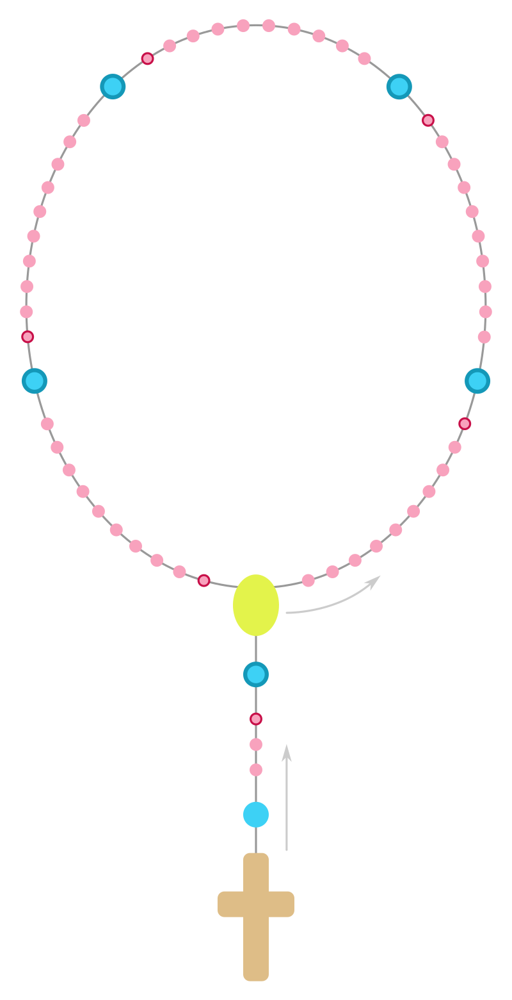
Die Wunder des heiligen Rosenkranzes
Geschichte, Geheimnisse und Gebete des heiligen Rosenkranzes
Mein Sohn, sei nicht erstaunt über den Misserfolg deiner Predigten! Du bearbeitest nämlich ein Erdreich, das nicht vom Regen begossen wurde. Wisse denn, als Gott beschloss, die Welt zu erneuern, schickte Er den Regen des Englischen Grußes voraus, und so wurde die Welt erneuert. Lade deshalb gleichfalls die Menschen in deinen Predigten ein, meinen Rosenkranz zu beten, und du wirst große Früchte für die Seelen daraus ernten. Die Gottesmutter zum hl. Dominikus
Diese Broschüre der Marianischen Priester- und Laienbewegung erzählt die Geschichte des heiligen Rosenkranzes: von der Erscheinung der Gottesmutter beim hl. Dominikus über seine großen Apostel bis zu den Botschaften von Fatima. Dazu die Betrachtung der freuden-, schmerzhaften, glorreichen und lichtreichen Geheimnisse sowie eine Anleitung und alle Gebete des Rosenkranzes.
Inhalt
- Die Kette des Heiles
- Die Nachfolger des hl. Dominikus
- Die Rosenkranzkönigin von Pompeji
- Maria ruft auch in den letzten Zeiten
- Das schönste Familiengebet
- Die Betrachtung der Rosenkranzgeheimnisse
- Wie wird der Rosenkranz gebetet?
- Die Gebete des Rosenkranzes
- Die freudenreichen Geheimnisse
- Die schmerzhaften Geheimnisse
- Die glorreichen Geheimnisse
- Die lichtreichen Geheimnisse
Die Kette des Heiles
Das Rosenkranzgebet ist eines der größten und herrlichsten Gebete der Christen und es hat seine wunderbare Kraft in den großen Schlachten Gottes immer wieder aufs Neue bewiesen.
Doch blicken wir zunächst auf die außergewöhnlichen Ereignisse, durch die sich der Himmel den Weg bahnte, um dem Rosenkranzpsalter, wie er in der heutigen Form gebetet wird, einen ganz hervorragenden Platz unter den kirchlichen Gebeten zu bereiten.
Als sich der hl. Dominikus (1170 – 1221) einst in den Wald bei Toulouse zurückzog, um durch Gebet und außergewöhnliche Bußübungen Gottes Hilfe zu erflehen im Kampf gegen die Irrlehrer und im Ringen um die Bekehrung der Sünder, erschien ihm die Gottesmutter und sprach: Weißt du, mein lieber Dominikus, welcher Waffe Sich die Heiligste Dreifaltigkeit bedient hat, um das Heil der Welt wiederherzustellen?
O meine Herrin! antwortete er, du weißt es besser als ich, denn nach deinem Sohne Jesus Christus bist du das vorzüglichste Werkzeug unseres Heiles gewesen.
Darauf erklärte die allerseligste Jungfrau: Wisse, dass die hauptsächlichste Waffe der Psalter des Rosenkranzes war, welcher das Fundament des neuen Testamentes ist. Wenn du deshalb jene verstockten Herzen für Gott gewinnen willst, so predige meinen Rosenkranz.
Der Heilige erhob sich ganz getröstet, und von Eifer für das Heil dieser Völker entflammt, trat er in die Kathedrale ein. Sofort läuteten die Glocken, von Engelshand gezogen, um die Einwohner zu versammeln. Bei Beginn der Predigt erhob sich ein schreckliches Gewitter, die Erde erzitterte, die Sonne verfinsterte sich und der unaufhörliche Donner und die gewaltigen Blitzschläge bewirkten, dass alle Zuhörer erbleichten und zitterten. Ihr Schrecken steigerte sich noch mehr, als sie sahen, wie ein Marienbild, das vor aller Augen ausgestellt war, dreimal die Arme gen Himmel erhob, um die Rache Gottes über sie herabzurufen, falls sie sich nicht bekehren und unter den Schutz der Gottesmutter flüchten wollten.
Durch dieses Wunder wollte der Himmel die neue Andacht des heiligen Rosenkranzes vermehren und verbreiten. Durch die Fürbitte des hl. Dominikus legte sich schließlich das Gewitter und er fuhr fort mit solchem Eifer und solcher Kraft die Vortrefflichkeit des heiligen Rosenkranzes zu erklären, dass fast alle Bewohner der Stadt ihn annahmen und ihren Irrtümern widersagten. Nach kurzer Zeit nahm man eine große Veränderung in den Sitten und im Leben der Stadt wahr.1
1 Vgl. Hl. Ludwig Maria Grignion von Montfort, Der heilige Rosenkranz, Imprimatur: Friburgi Helvetiorum, 10. Juli 1929.
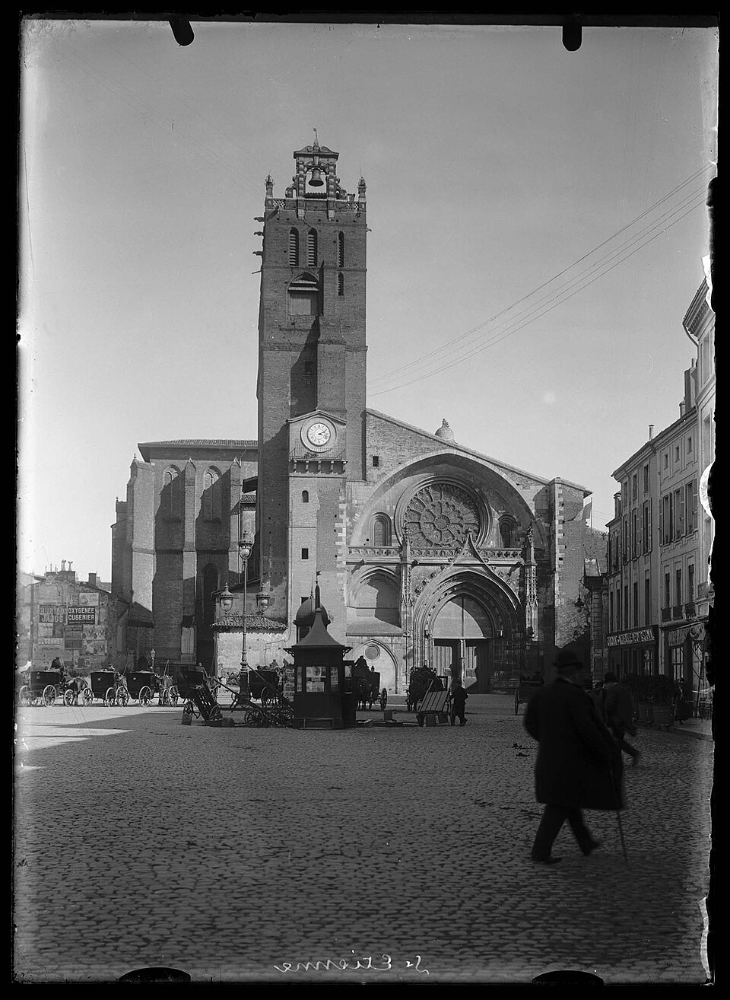
Kathedrale von Toulouse
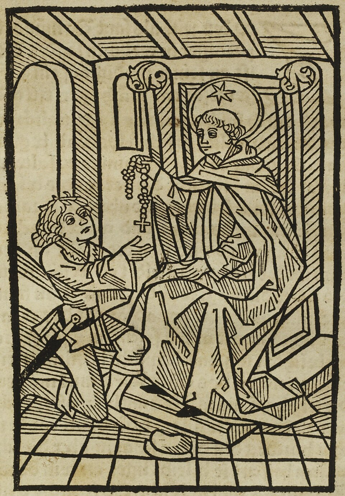
Sel. Alanus de Rupe
Die Nachfolger des hl. Dominikus
Da im Laufe der Zeit die anfangs so blühende Andacht des Rosenkranzes in argen Verfall geriet, sandte die Gottesmutter in der Mitte des 15. Jahrhunderts den sel. Alanus de Rupe (1428 – 1475), um dieses göttliche Werk zu erneuern. Sie offenbarte ihm wunderbare Geheimnisse über die Vortrefflichkeit des Rosenkranzgebetes, die er sogar mit einem Eid bekräftigte.
Die allerseligste Jungfrau soll ihm in einer Erscheinung eine Kette um den Hals gelegt, in der hundertfünfzig Edelsteine und fünfzehn Rubine gefasst waren, und ihm versichert haben: Dieses will ich allen geistigerweise tun, die meinen Psalter andächtig beten, und im Himmel werden sie besondere Freuden genießen. Maria offenbarte ihm auch, ein einziges Ave Maria sei kostbarer als alles Zeitliche unter der Sonne, als alle Güter des Leibes und des Geistes.
Auch schrieb der selige Alanus, dass einst ein Diener Gottes in den Himmel versetzt worden sei. Dort habe er ein großes, glänzendes Buch gesehen, worin alle Namen der Brüder und Schwestern der Rosenkranzbruderschaft geschrieben standen, und es wurden deren immer mehr vom heiligen Dominikus und vom heiligen Franziskus aufgezeichnet.
Doch die menschliche Unbeständigkeit ist gar zu groß, und zum drittenmal erwählte Maria einen Apostel, der den Eifer für den ihr so teuren Rosenkranz in der Kirche beleben sollte: Ludwig Maria Grignion von Montfort (1673-1716). Während seines Lebens erneuerte er die ganze Bretagne und Vendée durch das Rosenkranzgebet und bereitete so der Gnade Gottes den Weg in die Herzen der Menschen.2
2 Vgl. Die Königin des heiligen Rosenkranzes in Valle di Pompeji von Eduard Winterhalter, Freiburg i. Ue. 1973, mit kirchlicher Druckerlaubnis.
Ein gut gebetetes Ave Maria ist für den Teufel ein Feind, der ihn in die Flucht schlägt, ein Hammer, der ihn zermalmt, für die Seele ein Mittel der Heiligung, für die Engel eine Freude.
Es ist der Hymnus der Auserwählten, das Hohelied des Neuen Bundes, das Entzücken Mariens und die Verherrlichung der Allerheiligsten Dreifaltigkeit. Hl. Ludwig Maria Grignion von Montfort
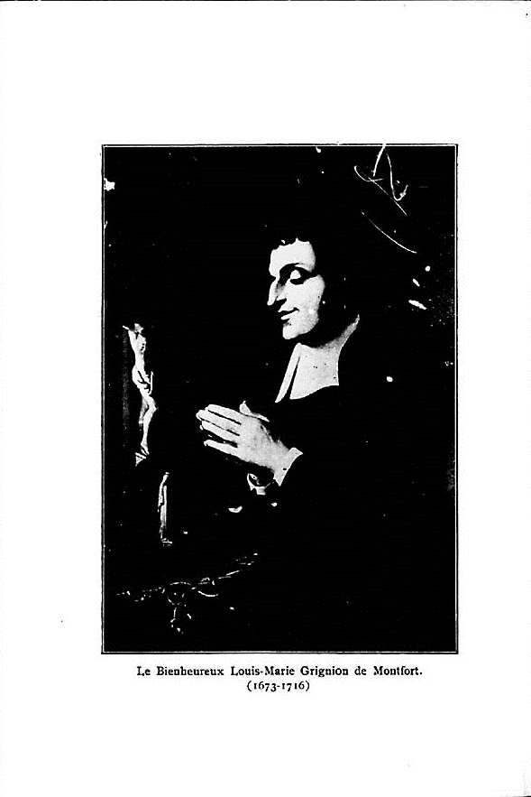
Hl. Ludwig Maria Grignion von Montfort
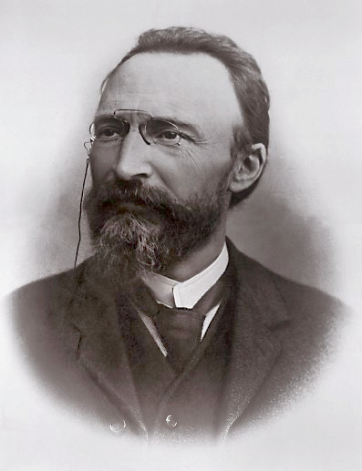
Hl. Bartolo Longo
Die Rosenkranzkönigin von Pompeji
Auch die wunderbaren Ereignisse in Valle di Pompeji (bei Neapel in Italien), die im Jahre 1872 ihren Anfang nahmen, riefen gleich der Stimme der großen Rosenkranzapostel durch die ganze Welt und haben alle Nationen und Völker der Erde zum Rosenkranzgebet aufgefordert. Maria hat daselbst mit Hilfe ihres eifrigen Dieners Bartolo Longo (1841 – 1926) ein Heiligtum, einen Gnadenort vom heiligen Rosenkranz gegründet, der die ganze Welt in Staunen setzte.3
Sie hat dadurch der Welt zu erkennen gegeben, wie sie als Königin des heiligen Rosenkranzes verehrt werden will und was für Gnaden jene erlangen, die sie unter diesem Titel anrufen. Dies beweisen die vielen Wunder, Bekehrungen, Krankenheilungen und Gebetserhörungen in der ganzen Welt.
Im Geist des hl. Dominikus verfasste Papst Leo XIII. zwölf Enzykliken und mehrere Apostolische Schreiben allein über den Rosenkranz, um die Christenheit zu diesem Gebet aufzufordern. Es ist die Waffe, die der große Papst den Kindern der Kirche gab gegen die Wut der Hölle, die die Kirche Christi vernichten will.
Über das Gnadenbild von Pompeji schrieb der genannte Papst an Bartolo Longo die bedeutsamen Worte: Gott hat sich dieses heiligen Bildes bedient, um Hunderttausende von Gläubigen zu der überaus heilsamen Übung des heiligen Rosenkranzes zurückzuführen.4
3 Hoffnungslos im Spiritismus und im Okkultismus gefangen, erlebte Bartolo Longo die Macht des Rosenkranzgebetes, durch das ihn die Gottesmutter aus diesem „geistigen Sumpf" herauszog. Im Sakrament der Buße erfuhr der junge Advokat den beglückenden Frieden der barmherzigen Liebe Gottes, die ihn immer mehr seine Berufung zum Apostel der Rosenkranzkönigin erkennen ließ. Besonders für jene, die in gefährlichen spirituellen Strömungen gefangen sind, ist seine wunderbare Bekehrung ein lebendiges Zeichen der Hoffnung, dass Gott auch auf den krümmsten Lebenslinien die schönsten Zeilen schreiben kann.
4 Vgl. Die Königin des heiligen Rosenkranzes in Valle di Pompeji.
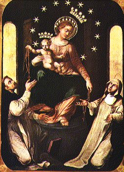
O Rosenkranz, gesegnet von Maria, süße Kette, die uns an Gott bindet, Band der Liebe, das uns mit den Engeln vereint, Turm des Heiles gegen die Angriffe der Hölle, sicherer Hafen im allgemeinen Schiffbruch, dich lassen wir nie mehr los. Du, unsere Stärke in der Stunde des Todes. Dir gilt der letzte Kuss unseres Lebens, wenn wir sterben.
Der letzte Gruß unserer Lippen sei dein holder Name, o Königin des Rosenkranzes von Pompeji! O gute Mutter, du Zuflucht der Sünder, erhabene Trösterin der Betrübten, sei überall gepriesen, heute und immer, im Himmel und auf Erden! Amen. Hl. Bartolo Longo
Maria ruft auch in den letzten Zeiten
Niemals wird die Gottesmutter müde, ihre verirrten Schäflein zu rufen. Und vor allem dann, wenn die Hölle am mächtigsten ansetzt, um die Seelen zu verderben, vermehrt der Himmel seine Gnadenangebote, wie sich dies z. B. in Fatima zeigt. Dort bittet Maria ihre Kinder eindringlich um Buße, Opfer und Gebet, besonders um das Rosenkranzgebet.
Ganz durchdrungen vom Geist Mariens, erklärt Schwester Lùcia von Fatima: In diesen letzten Zeiten, in denen wir leben, hat die allerseligste Jungfrau dem Rosenkranz eine neue Wirksamkeit verliehen. Es gibt deshalb kein einziges, noch so schwerwiegendes Problem, das wir nicht durch den Rosenkranz lösen könnten … Der Rosenkranz ist die Kette, die uns zu Gott erhebt und uns an Ihn bindet.
Die gewaltigen Ereignisse in Fatima lösten einen großen Gebetssturm aus. Doch auch dieser hielt nicht so an, wie von Maria gewünscht. Im September 1961 brachte der Postulator des Seligsprechungsprozesses von Jacinta und Francesco eine wichtige Botschaft von Sr. Lúcia, die er mit Erlaubnis des Heiligen Vaters im Carmel von Coimbra besuchte. Sr. Lúcia war sehr betrübt und sprach über die tiefe Traurigkeit der Gottesmutter, weil sich so wenige um ihre Botschaft von 1917 kümmern. Selbst die Gläubigen beachten ihre Weisungen zu wenig und die Bösen gehen weiter auf dem Weg des Verderbens. Pater, sagen sie allen, was die Gottesmutter mir oft gesagt hat: Viele Nationen werden vom Antlitz der Erde verschwinden. Russland wird die Geißel sein, die Gott erwählt, um die Menschen zu strafen, wenn wir mit unserem Gebet und den Sakramenten nicht die Gnade zur Umkehr erlangen. Weiter erklärte die Gottesmutter Sr. Lúcia, dass die letzten Hilfsmittel, die der Welt gegeben sind, der Rosenkranz und die Verehrung ihres Unbefleckten Herzens sind. In diesen Worten der Gottesmutter leuchtet uns die Kernbotschaft von Fatima wieder neu auf: Man soll Gott, unseren Herrn, nicht mehr beleidigen, der schon so sehr beleidigt worden ist. (13. Oktober 1917)
Das schönste Familiengebet
Der Rosenkranz ist das schönste Familiengebet, durch das die einzelnen Familienmitglieder mit einem unzertrennlichen geistigen Band miteinander verbunden werden. Deshalb sollte das gemeinsame Rosenkranzgebet das Herzstück jeder Familie sein.5
In seinem Apostolischen Schreiben „Rosarium Virginis Mariae" erklärt Papst Johannes Paul II: Eine Familie, die vereint betet, bleibt eins.
Nun werden sicher manche einwenden, dass ihr Ehepartner oder die Kinder nicht zum gemeinsamen Beten bereit sind, weil sie sich vom Glauben und den Sakramenten entfernt haben. In dieser Situation ist es sinnvoll, einfach allein zu beginnen und stellvertretend für die Familienangehörigen der Gottesmutter das Gebet darzubringen.
Wenn wir dies beharrlich tun, werden wir nicht nur in unserem eigenen Herzen „Wandlungswunder" erleben, sondern auch in den Herzen unserer Lieben. Was hat doch nicht schon alles das Gebet einer gläubigen Mutter, eines gläubigen Vaters, oder das Gebet gläubiger Großeltern in den Herzen der Kinder und Enkelkinder bewirkt. Denn jedes Ave Maria, das wir vertrauensvoll zum Himmel schicken, wird in Gnaden verwandelt auf uns und auf alle, für die wir beten, zurückfallen. Dies versichert uns der hl. Bonaventura, wenn er sagt: Maria grüßt uns mit der Gnade, wenn wir sie mit dem Ave Maria grüßen. Und der heilige Alfons Maria von Liguori sagt: Ein Ave Maria ist mehr wert als die ganze Schöpfung.
5 In einem Brief an Kardinal Carlo Caffarra schrieb Sr. Lúcia von Fatima die treffenden Worte: Die letzte Schlacht zwischen dem Herrn und der Herrschaft Satans wird um die Ehe und die Familie geschlagen. Daher ist es nicht verwunderlich, dass der böse Feind mit seinem ganzen Anhang alles daran setzt, die Einheit und den Glauben in den Familien zu zerstören.
Um Zeit und Raum für das Gebet zu gewinnen, ist es wichtig, auf den übermäßigen Gebrauch der vielen Kommunikationsmittel, besonders auf das Fernsehen und das Internet, zu verzichten. Über den großen Segen und die geistigen Früchte, die wir dadurch ernten, dürfen wir uns schon jetzt und erst recht in der Ewigkeit unendlich freuen.
Das Rosenkranzgebet zu Hause wird feierlicher und gesammelter, wenn wir vor einem Marienbild oder einer Marienstatue beten und dabei evtl. eine Kerze entzünden.
Kranke und gebrechliche Menschen wird das Rosenkranzgebet in ihren Leiden aufrichten und stärken.
Eine ganz besondere Gnade ist es, wenn wir die Möglichkeit haben, den Rosenkranz in der Kirche vor dem Allerheiligsten zu beten.
Die hl. Mutter Teresa von Kalkutta legt uns ans Herz: Wenn wir den Rosenkranz vor dem Allerheiligsten Sakrament beten, lieben wir Jesus mit dem Herzen Mariens. Wir schenken Jesus die vollkommene Anbetung Mariens. Wir vereinigen unsere Liebe zu Jesus mit dem Lobpreis und der vollkommenen Liebe Mariens. Jesus nimmt unsere Stunde der Anbetung an, als hätte Maria selbst gebetet. Die Schwachheit unseres Glaubens oder die Armut unserer Liebe sind nicht von Bedeutung, Maria nimmt uns in ihr Herz auf und Jesus empfängt unsere Anbetung so, als käme sie direkt aus dem Herzen Mariens, Seiner Mutter. Das Unbefleckte Herz Mariens ergänzt das, was unserem Herzen fehlt.
Und wenn wir zu Fuß, im Auto, im Zug oder im Bus unterwegs sind, oder auch Arbeiten verrichten, die keine besondere Konzentration erfordern, so können wir ebenfalls das Rosenkranzgebet pflegen, und wir werden erfahren, wieviel Segen und geistliche Freude uns daraus entspringt.
So wird unser kleines Leben mitten im Getriebe der Welt zu einer verborgenen Quelle, die hineinströmt in den großen Gnadenstrom so vieler Opfer und Gebete, die mitwirken dürfen am Triumph der Vereinten Herzen Jesu und Mariens.
Die Betrachtung der Rosenkranzgeheimnisse
Über den Rosenkranzpsalter sprach die Gottesmutter zum sel. Alanus de Rupe: Es ist ein sehr nützliches Gebet, ein Dienst, der mir sehr angenehm ist, hundertfünfzigmal den Engelsgruß zu beten. Er ist es mir noch mehr, und man tut noch viel besser daran, wenn man ihn unter Betrachtung des Lebens, Leidens und der Glorie Jesu Christi betet, denn die Betrachtung ist die Seele dieser Gebete.
Auf den folgenden Seiten finden sich zunächst die traditionellen 15 Geheimnisse mit jeweils einem kurzen Betrachtungstext. Im Anschluss folgen in kurzer Form die lichtreichen Geheimnisse. Diese wurden von Papst Johannes Paul II. im Hinblick auf die Verherrlichung des öffentlichen Lebens Jesu dem Rosenkranzpsalter als kostbare Perle hinzugefügt.
Nichts stärkt das Gottesreich in unserem Inneren mehr als das betrachtende Beten des Rosenkranzes. Hl. Ludwig Maria Grignion v. Montfort
Wie wird der Rosenkranz gebetet?
Eröffnung
Im Namen des + Vaters und des + Sohnes und des + Heiligen Geistes. Amen. (Kreuzzeichen)6
Ich glaube an Gott … (siehe Seite 20)
Danach folgt 1 Vaterunser (siehe Seite 20) und 3 Gegrüßet seist du, Maria (Ave Maria; siehe Seite 21), nach dem Namen Jesus werden die drei göttlichen Tugenden eingefügt:
… der in uns den Glauben vermehre
… der in uns die Hoffnung stärke
…
der in uns die Liebe entzünde
Diese Eröffnung wird mit dem Ehre sei dem Vater (siehe Seite 21) abgeschlossen.
6 Viele Menschen pflegen die schöne Geste, vor Beginn des Gebetes das Kreuz des Rosenkranzes zu küssen. Dieser Kuss ist ein besonderer Akt der Liebe, durch den wir unserem Erlöser danken, dass Er ganz persönlich für einen jeden von uns gestorben ist. Schon durch diesen Kuss prägt uns der Heiland ein unauslöschliches Merkmal Seiner Erlöserliebe in unsere Seele ein.
Werden mehrere Rosenkränze an einem Tag gebetet, so entfällt die Eröffnung bei jedem weiteren Rosenkranz.
Bei den einzelnen Rosenkranzgeheimnissen (siehe Seite 23 - 51) wird zuerst 1 Vaterunser gebetet. Darauf folgen 10 Ave Maria mit dem jeweiligen Geheimnis des Rosenkranzes, das nach dem Namen Jesus eingefügt wird, z.B. Gegrüßet seist du, Maria, … Jesus, den du, o Jungfrau, vom Heiligen Geist empfangen hast.7
Es folgt das Ehre sei dem Vater und das Fatimagebet. (siehe Seite 21)
7 „Die Worte, die wir betend sprechen, sind Worte des Engels, Worte des Heiligen Geistes … in denen die ganze Geschichte Israels, die Geschichte Gottes mit den Menschen, gesammelt ist. Das Neue am Rosenkranz ist eigentlich nur, dass wir bei diesen Worten verweilen; dass wir sie wiederholen, weil die großen Dinge durch Wiederholen nicht langweilig werden. Nur das Belanglose braucht die Abwechslung … Das Große wird größer, indem wir es wiederholen, und wir selbst werden reicher dabei …" (Kardinal Joseph Ratzinger, am Deutschen Katholikentag 1984)
Die Gebete des Rosenkranzes
Apostolisches Glaubensbekenntnis
Ich glaube an Gott, den Vater, den Allmächtigen, den Schöpfer des Himmels und der Erde, und an Jesus Christus, Seinen eingeborenen Sohn, unseren Herrn, empfangen durch den Heiligen Geist, geboren von der Jungfrau Maria, gelitten unter Pontius Pilatus, gekreuzigt, gestorben und begraben, hinabgestiegen in das Reich des Todes, am dritten Tage auferstanden von den Toten, aufgefahren in den Himmel; Er sitzet zur Rechten Gottes, des allmächtigen Vaters; von dort wird Er kommen, zu richten die Lebenden und die Toten. Ich glaube an den Heiligen Geist, die heilige katholische Kirche, Gemeinschaft der Heiligen, Vergebung der Sünden, Auferstehung des Fleisches und das ewige Leben. Amen.
Vaterunser
Vater unser im Himmel, geheiligt werde Dein Name. Dein Reich komme, Dein Wille
geschehe, wie im Himmel, so auf Erden.
Unser tägliches Brot gib uns heute
und vergib uns unsere Schuld, wie auch wir vergeben unseren Schuldigern. Und
führe uns nicht in Versuchung, sondern erlöse uns von dem Bösen. Amen.
Ave Maria
Gegrüßet seist du, Maria, voll der Gnade, der Herr ist mit dir. Du bist gebenedeit
unter den Frauen, und gebenedeit ist die Frucht deines Leibes, Jesus.
Heilige
Maria, Mutter Gottes, bitte für uns Sünder, jetzt und in der Stunde unseres Todes.
Amen.
Ehre sei dem Vater
Ehre sei dem Vater und dem Sohn und dem Heiligen Geiste, wie im Anfang, so auch jetzt und allezeit und in Ewigkeit. Amen.
Fatimagebet
O mein Jesus, verzeih uns unsere Sünden, bewahre uns vor dem Feuer der Hölle, führe alle Seelen in den Himmel, besonders jene, die Deiner Barmherzigkeit am meisten bedürfen.8
8 Am 13. Juli 1917 sprach die Gottesmutter in Fatima zu den drei Hirtenkindern: „Wenn ihr den Rosenkranz betet, dann sagt nach jedem Gesetz: O mein Jesus … "
Ich verspreche allen, die andächtig den Psalter meines Rosenkranzes beten, meinen besonderen Schutz und große Hulderweise. Die Gottesmutter zum sel. Alanus de Rupe
Die freudenreichen Geheimnisse
1. Geheimnis
Den du, o Jungfrau, vom Heiligen Geist empfangen hast
Der Engel trat bei ihr ein und sagte: „Sei gegrüßt, du Gnadenvolle, der Herr ist mit dir … Siehe, du wirst empfangen und einen Sohn gebären. Dem sollst du den Namen Jesus geben. Er wird groß sein und Sohn des Allerhöchsten genannt werden…" Maria sprach: „Siehe, ich bin die Magd des Herrn, mir geschehe nach deinem Wort." (Lk 1,28-38)
Wir opfern Dir auf, o Herr Jesus Christus, dieses Geheimnis der Menschwerdung im Schoße Deiner Mutter und bitten Dich durch ihre Fürbitte um eine tiefe Demut und die Bereitschaft zu allem, was Gott von uns will.
Begehre nichts anderes, als dass der heilige Wille Gottes vollkommen an dir erfüllt werde. Hl. Kreszentia von Kaufbeuren
Wer meinen Rosenkranz verbreitet, wird in all seinen Nöten meine Hilfe erfahren. Die Gottesmutter zum sel. Alanus de Rupe
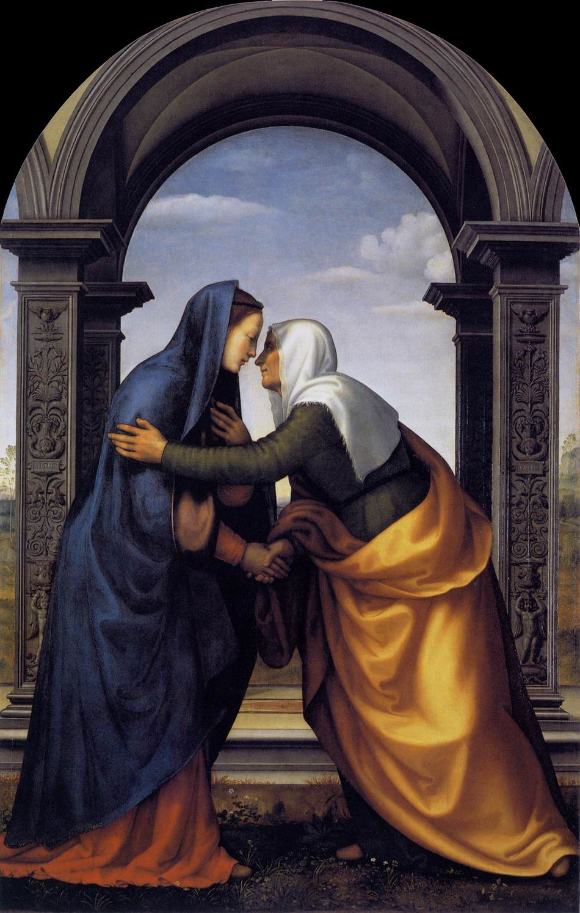
Mariä Heimsuchung bei Elisabeth
2. Geheimnis
Den du, o Jungfrau, zu Elisabeth getragen hast
Maria machte sich auf und ging eilends in das Gebirge in eine Stadt … Sie begrüßte Elisabeth … Und Elisabeth wurde vom Heiligen Geist erfüllt. Sie rief mit lauter Stimme: „Du bist die Gebenedeite unter den Frauen und gebenedeit ist die Frucht deines Leibes." (Lk 1,39-42)
Durch dieses Geheimnis erflehe uns, o Maria, eine opferfreudige Nächstenliebe.
Indem du deine Pflichten freudig und mit Großherzigkeit erfüllst, trägst du dazu bei, dass der Herr auch anderen Menschen vielfältige Gnaden spendet. Hl. Josemarie Escriva
Viele Seelen werden durch den Rosenkranz gerettet. Er wird die Herzen umkehren, und sie werden anfangen, das Irdische zu verachten, das Himmlische zu lieben und rasche Fortschritte zu machen. Die Gottesmutter zum sel. Alanus de Rupe
3. Geheimnis
Den du, o Jungfrau, zu Bethlehem geboren hast
Sie gebar ihren Sohn, den Erstgeborenen, wickelte Ihn in Windeln und legte Ihn in eine Krippe. Denn in der Herberge war kein Platz für sie. (Lk 1,7)
Durch dieses Geheimnis erflehe uns, o Maria, den Geist der Kindschaft und die Liebe zur Einfachheit und Armut.
Gottes Sohn ist Mensch geworden wie wir, nicht nur, damit Er uns rette, sondern dass wir selber Retter würden wie Er, indem wir mitarbeiten am Heil der Seelen. Hl. Vinzenz v. Paul
Es ist unmöglich, auszudrücken, wie sehr Maria den Rosenkranz über alle Andachten schätzt und wie überschwenglich sie jene belohnt, die daran arbeiten, ihn zu predigen, einzuführen und zu pflegen. Hl. Ludwig M. Grignion von Montfort
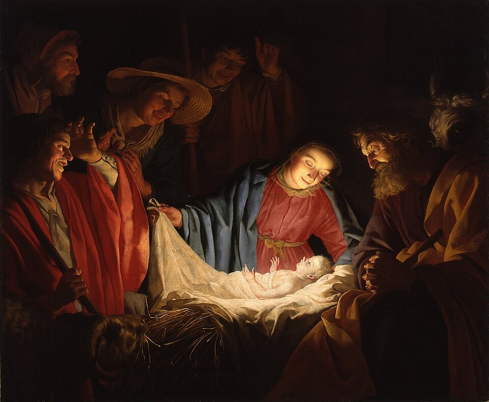
Geburt Christi in Bethlehem
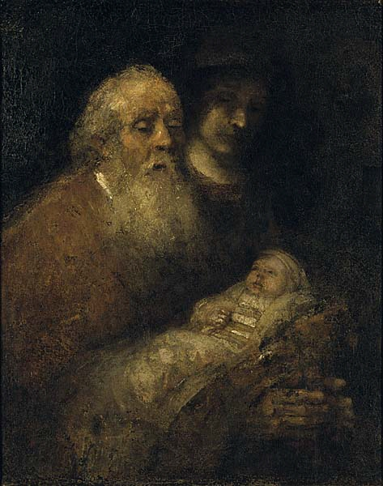
Der greise Simeon nimmt das Jesuskind auf seine Arme
4. Geheimnis
Den du, o Jungfrau, im Tempel aufgeopfert hast
Sie brachten das Kind nach Jerusalem hinauf, um es dem Herrn zu weihen … Simon nahm Es auf seine Arme, pries Gott und sprach: „Meine Augen haben Dein Heil gesehen, das Du vor allen Völkern bereitet hast, ein Licht zur Erleuchtung der Heiden." (Lk 2,22-32)
Durch dieses Geheimnis erflehe uns, o Maria, die Reinheit des Leibes und der Seele und die Gnade, Christus stets treu zu bekennen.
Gibt es einen glorreicheren Lobpreis als wenn die Seele sich in unendlicher Liebe Jesus opfert und Jesus dem Ewigen Vater! Marthe Robin
Das ist der Exorzismus, den auch die Laien beten können. Damit kein Zweifel besteht, ich verleihe dem Rosenkranz die Macht des Exorzismus! Hl. Papst Johannes Paul II.
5. Geheimnis
Den du, o Jungfrau, im Tempel wieder gefunden hast
Nach drei Tagen fanden sie Ihn im Tempel; Er saß mitten unter den Lehrern, hörte ihnen zu und stellte Fragen. Alle, die Ihn hörten, waren erstaunt über Sein Verständnis und über Seine Antworten. (Lk 2,46-47)
Durch dieses Geheimnis erflehe uns, o Maria, eine innige Vereinigung mit Jesus und die Gnade, in Seiner Liebe immer mehr zu wachsen.
Die Vollkommenheit fängt damit an, auch in den kleinsten Dingen den heiligsten Willen Gottes zu erfüllen. Sel. Kaspar Stanggassinger
Mit dem Rosenkranz werden wir uns heiligen. Wir werden unseren Herrn und Heiland trösten und die Rettung vieler Seelen erlangen. Schwester Lúcia von Fatima
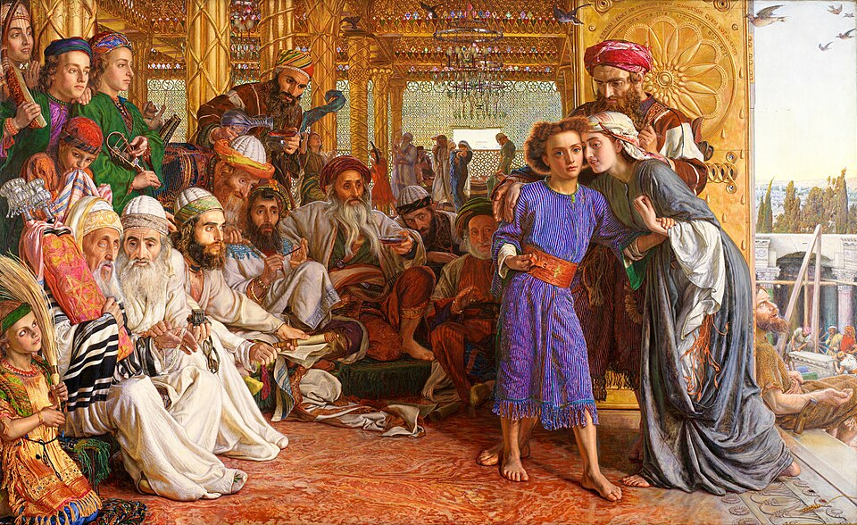
Der zwölfjährige Jesus im Tempel
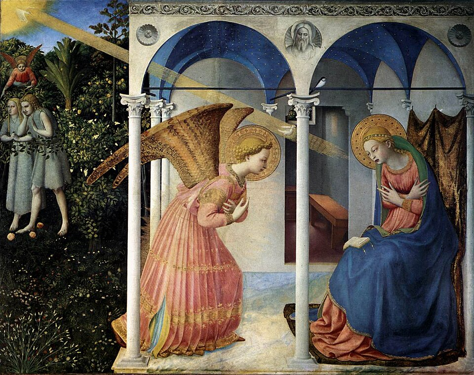
Mariä Verkündigung
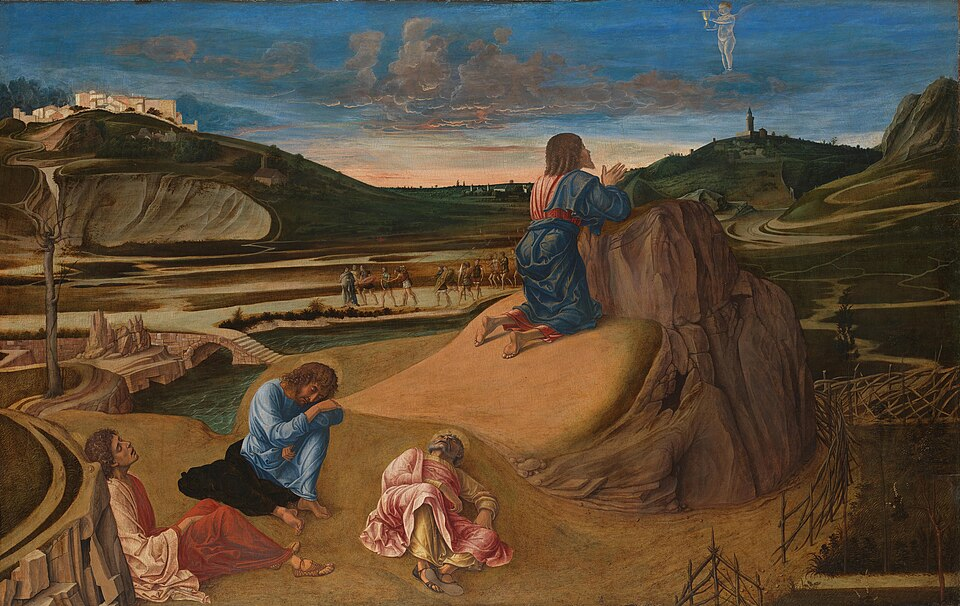
Jesus betet am Ölberg
Die schmerzhaften Geheimnisse
1. Geheimnis
Der für uns Blut geschwitzt hat
Er entfernte Sich ungefähr einen Steinwurf weit von ihnen, kniete nieder und betete: „Vater, wenn Du willst, nimm diesen Kelch von Mir! Aber nicht Mein, sondern Dein Wille geschehe!" … Er geriet in Angst und betete noch inständiger. Sein Schweiß war wie Blutstropfen, die zur Erde rannen. (Lk 22,41-45)
Durch dieses Geheimnis erflehe uns, o Maria, eine tiefe Reue über unsere Sünden.
Ein Tropfen Bitterkeit muss in alle Kelche gemischt sein. Denn nach meiner Ansicht helfen die Prüfungen sehr, sich vom Irdischen loszureißen; sie wenden unseren Blick mehr zum Himmel als zur Erde. Hl. Theresia vom Kinde Jesu
Der Rosenkranz ist ein mächtiger Schild gegen den bösen Feind; er vernichtet das Laster, verhindert die Sünde und rottet die Irrlehre aus. Die Gottesmutter zum sel. Alanus de Rupe
2. Geheimnis
Der für uns gegeißelt worden ist
„Wollt ihr also, dass ich euch den König der Juden freilasse?" Da schrien sie wieder: „Nicht diesen, sondern Barabbas." … Hierauf ließ Pilatus Jesus ergreifen und geißeln. (Joh 18,39-40; 19,1)
Durch dieses Geheimnis erflehe uns, o Maria, den Geist der Buße und Abtötung.
Je mehr sich der Mensch überwindet und im Geiste abtötet, desto größer sein Fortschritt, desto reicher das Maß der Gnaden.
(Thomas von Kempen)
Denken wir daran, Liebe lebt und nährt sich mit Opfern. Hl. Maximilian Maria Kolbe
Der Rosenkranz ist die mächtigste Waffe, um die Dämonen in die Flucht zu schlagen und die Versuchungen zu überwinden, um das Herz Gottes zu gewinnen und Gnaden von der Gottesmutter zu erlangen. Hl. P. Pio
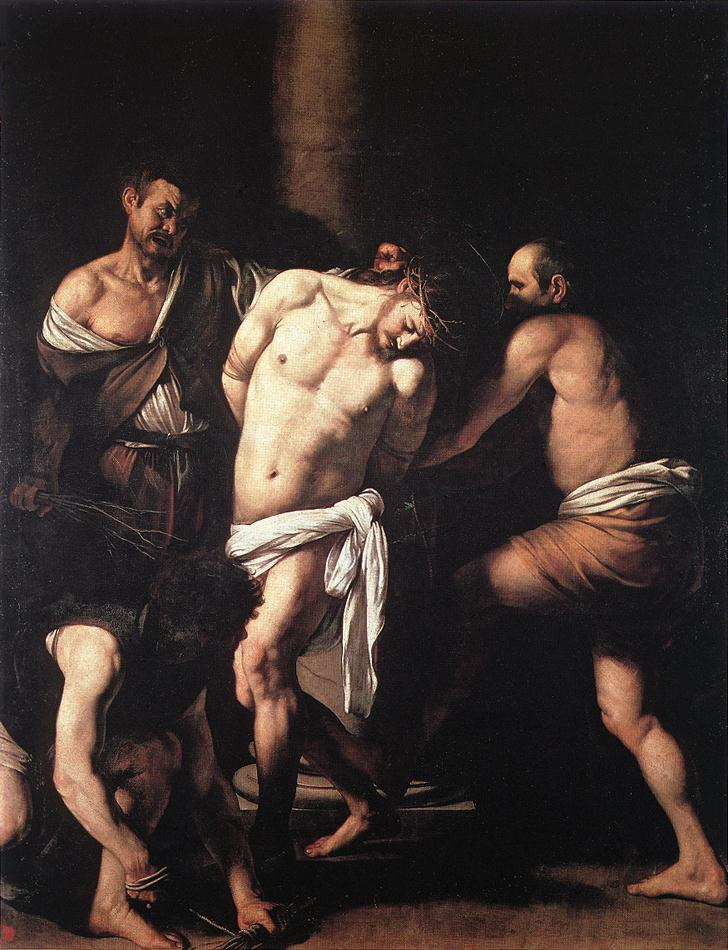
Geißelung Christi
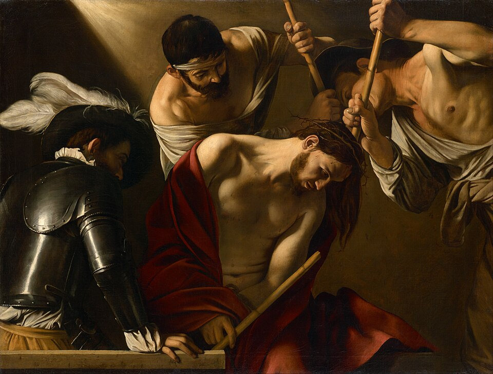
Dornenkrönung Christi
3. Geheimnis
Der für uns mit Dornen gekrönt worden ist
Die Soldaten flochten aus Dornen eine Krone, setzten sie Ihm aufs Haupt und legten Ihm einen Purpurmantel um. Dann traten sie vor Ihn hin und riefen: „Heil Dir, König der Juden!" und gaben Ihm Backenstreiche. (Joh 19,2-3)
Durch dieses Geheimnis erflehe uns, o Maria, die Loslösung vom Geist der Welt und von unserem Eigenwillen.
Wenn ihr in Versuchung seid, wo immer ihr euch befindet, werft euch vor dem Herrn auf die Knie! Sprecht, Herr, ich widersage Satan und seinen Werken, ich will nur Deinen Geist. Hl. Mirjam von Abellin
Ich will, dass alle, die meinen Rosenkranz mit Andacht beten, während ihres Lebens und im Augenblick ihres Todes der Fülle göttlicher Erleuchtungen und Gnaden teilhaftig werden sowie der Verdienste der Heiligen Gottes. Die Gottesmutter zum sel. Alanus de Rupe
4. Geheimnis
Der für uns das schwere Kreuz getragen hat
Er lud Sich selbst das Kreuz auf und ging zur sogenannten Schädelstätte hinauf, die auf hebräisch Golgotha heißt. (Joh 19,17-18)
Wer Mir nachfolgen will, verleugne sich selbst, nehme täglich sein Kreuz auf sich und so folge er Mir. (Lk 9,23)
Durch dieses Geheimnis erflehe uns, o Maria, Geduld in Leiden und Widerwärtigkeiten.
Jeder auf dieser Welt hat sein Kreuz. Wir dürfen es aber nicht auf uns nehmen wie der böse Schächer. Wir müssen uns den guten Schächer zum Vorbild nehmen. Hl. P. Pio
Die Gläubigen, die mein Rosenkranzgebet andächtig pflegen, werden nicht ohne Empfang der heiligen Sakramente sterben. Die Gottesmutter zum sel. Alanus de Rupe
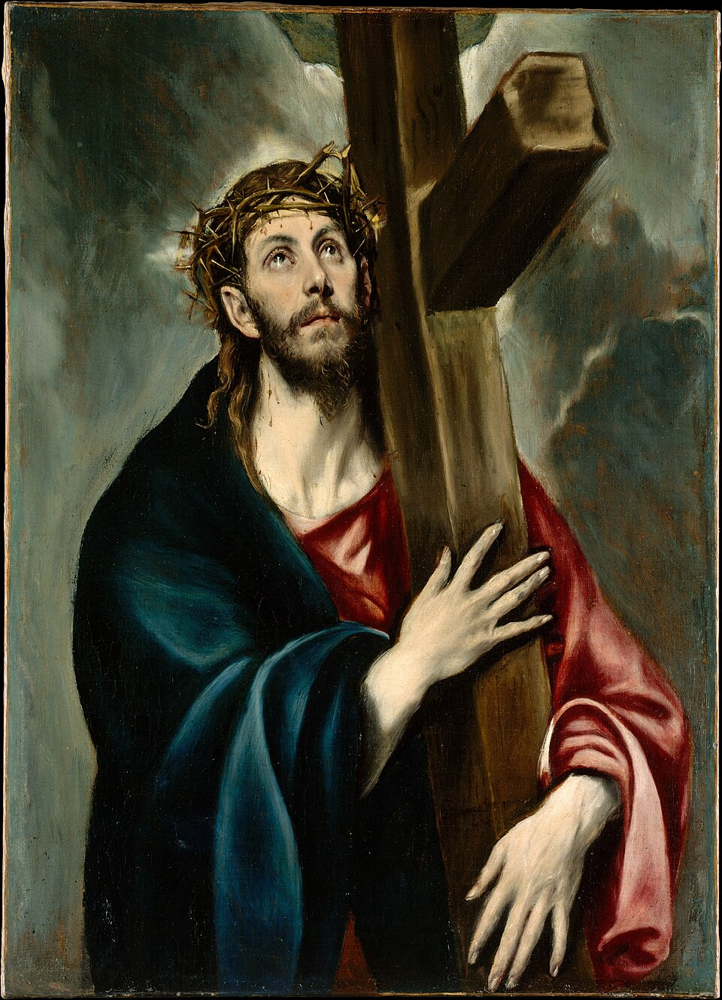
Kreuztragung Christi
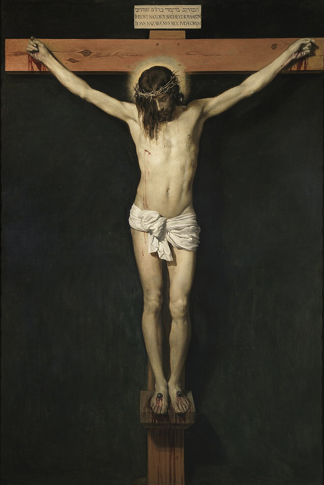
Kreuzigung Christi
5. Geheimnis
Der für uns gekreuzigt worden ist
Als die Soldaten zu Jesus kamen, sahen sie, dass Er schon tot war… Einer der Soldaten durchbohrte Seine Seite mit einer Lanze, und sogleich kam Blut und Wasser heraus. (Joh 19,33-34)
Durch dieses Geheimnis erflehe uns, o Maria, wahre Bekehrung und die verzeihende Liebe Jesu.
Das Kreuz ist eine Last von der Art, wie es die Flügel für die Vögel sind. Sie tragen sie aufwärts. (Hl. Bernhard von Clairvaúx)
Lass dein Herz in Zeiten der Prüfung an Seinem durchbohrtem Herzen ruhen. Hl. P. Pio
Sehr bald werde ich die Seelen aus dem Fegefeuer befreien, die in ihrem Leben meinen Rosenkranz geliebt haben. Die Gottesmutter zum sel. Alanus de Rupe
Die glorreichen Geheimnisse
1. Geheimnis
Der von den Toten auferstanden ist
Vom Himmel herab stieg ein Engel des Herrn. Er trat hinzu, wälzte den Stein hinweg und setzte sich auf ihn hin. Er war anzusehen wie der Blitz und sein Gewand war weiß wie Schnee. Der Engel sprach zu den Frauen: „Fürchtet euch nicht! Ich weiß, ihr sucht Jesus, den Gekreuzigten. Er ist nicht hier, denn auferstanden ist Er, wie Er gesagt." (Mt 28,2-6)
Durch dieses Geheimnis erflehe uns, o Maria, lebendigen Glauben und apostolischen Eifer.
Opfern wir unsere Leiden Jesus auf, um Seelen zu retten. Leben wir für die Seelen, seien wir Apostel! Hl. Theresia vom Kinde Jesu
Der Rosenkranz ist die kürzeste Leiter, um in den Himmel aufzusteigen. Sel. Carlo Acutis
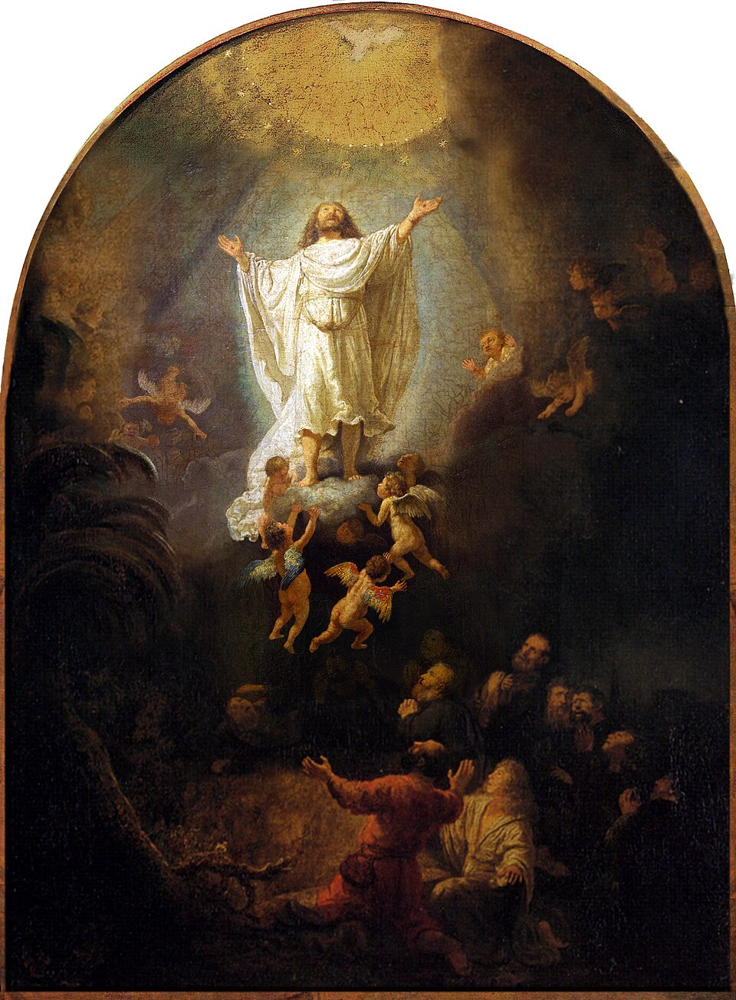
Christi Himmelfahrt
2. Geheimnis
Der in den Himmel aufgefahren ist
Dann sagte Er zu ihnen: „Geht hinaus in die ganze Welt und verkündet das Evangelium allen Geschöpfen!" … Nachdem Jesus, der Herr, dies zu ihnen gesagt hatte, wurde Er in den Himmel aufgenommen und setzte Sich zur Rechten Gottes. (Mk 16,15/19-20)
Durch dieses Geheimnis erflehe uns, o Maria, eine große Sehnsucht nach dem Himmel.
Alle Tage sammelt Verdienste! Jedesmal, wenn man euch verachtet, wenn man euch zu leiden gibt, wenn man euren Willen bricht, freut euch, alles das ist gut für den Himmel! Hl. Mirjam von Abellin
Der Rosenkranz bewirkt das Wiederaufblühen der Tugend und der Werke der Gottseligkeit. Durch ihn wird den Seelen die Fülle der göttlichen Erbarmungen zuteil. Die Gottesmutter zum sel. Alanus de Rupe
3. Geheimnis
Der uns den Heiligen Geist gesandt hat
Als der Tag des Pfingstfestes gekommen war, befanden sich alle Jünger beisammen an einem Ort. Plötzlich entstand vom Himmel her ein gewaltiges Brausen, wie wenn ein gewaltiger Sturm daherführe … Dann erschienen ihnen Zungen wie von Feuer, die sich verteilten und auf jeden von ihnen niederließen. Alle wurden vom Heiligen Geiste erfüllt. (Apg 2,1-4)
Durch dieses Geheimnis erflehe uns, o Maria, die Gnaden des Heiligen Geistes und einen großen Gebetseifer.
Seit dem Pfingsttag sind wir Gesandte, Apostel; wir sind Zeugen dieser Liebe. Von dieser Hoffnung erfüllt, erstreben wir eine frohe und schon jetzt in uns aufblühende Heiligkeit. Hl. Franz von Sales
Alle, die andächtig den Rosenkranz beten und dabei die Geheimnisse betrachten, werden vom Unglück nicht niedergebeugt und vor einem unvorhergesehenem Tod bewahrt bleiben. Die Gottesmutter zum sel. Alanus de Rupe
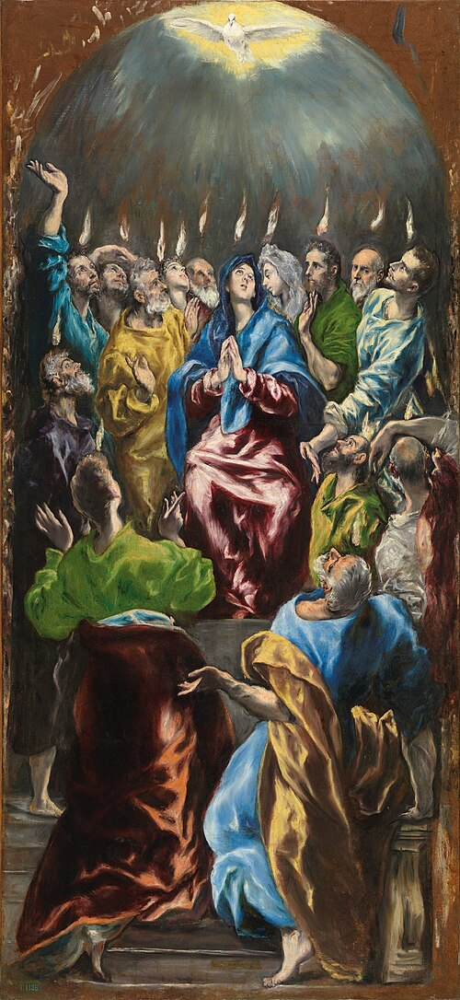
Pfingsten – Herabkunft des Heiligen Geistes
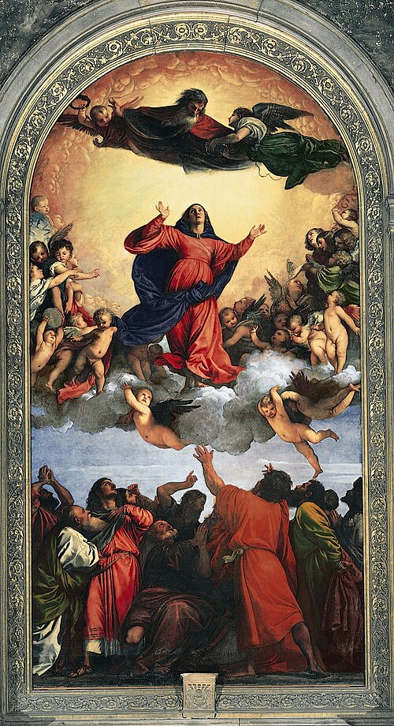
Mariä Aufnahme in den Himmel
4. Geheimnis
Der dich, o Jungfrau, in den Himmel aufgenommen hat
„Hochpreiset meine Seele den Herrn. Und mein Geist frohlockt in Gott meinem Heiland. Denn Er hat herabgeschaut auf die Niedrigkeit seiner Magd. Siehe, von nun an preisen mich selig alle Geschlechter. Denn Großes hat an mir getan der Allmächtige. Heilig ist Sein Name." (Lk 1,46-48)
Durch dieses Geheimnis erflehe uns, o Maria, einen glückseligen Tod.
Die Stürme dieser Erde überwinden wir, wenn wir in der Liebe und in der Gelassenheit eines Kindes vorangehen, das sich vom Vater geliebt weiß; Er wird es in der Gefahr nie allein lassen. Hl. Theresia vom Kinde Jesu
Die treuen Kinder meines Rosenkranzes werden sich im Himmel großer Herrlichkeit erfreuen. Die Gottesmutter zum sel. Alanus de Rupe
5. Geheimnis
Der dich, o Jungfrau, im Himmel gekrönt hat
Am Himmel erschien ein großes Zeichen: Eine Frau, mit der Sonne umkleidet, den Mond unter ihren Füßen und ein Kranz von zwölf Sternen auf ihrem Haupt. (Offb 12,1)
Durch dieses Geheimnis erflehe uns, o Maria, eine große Liebe zu dir, unserer Herrin und Königin, und die Gnade der Beharrlichkeit in deinem Dienste.
Im Buch des Lebens wird nur die Tugend aufgezeichnet, damit jene, die sie geübt haben, vor dem Angesicht der ganzen Welt mit dem ewigen Lohn gekrönt werden. Dominicus a Jesu Maria
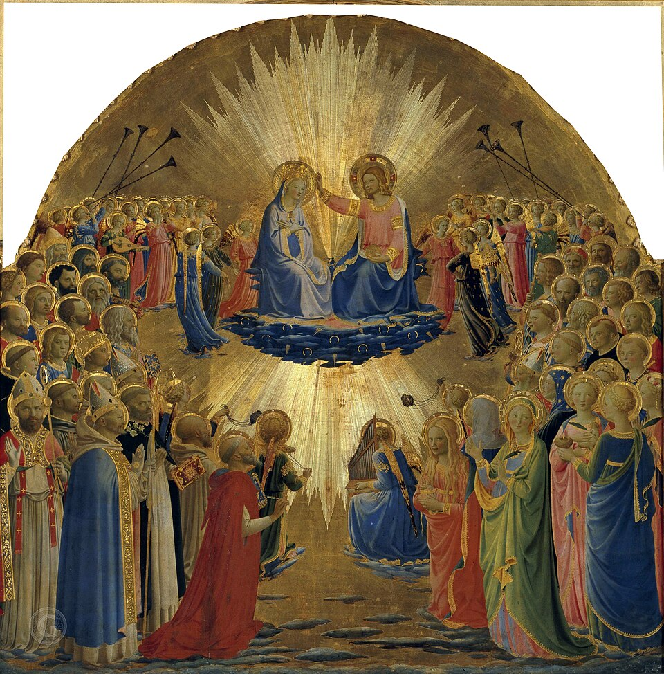
Krönung Mariens
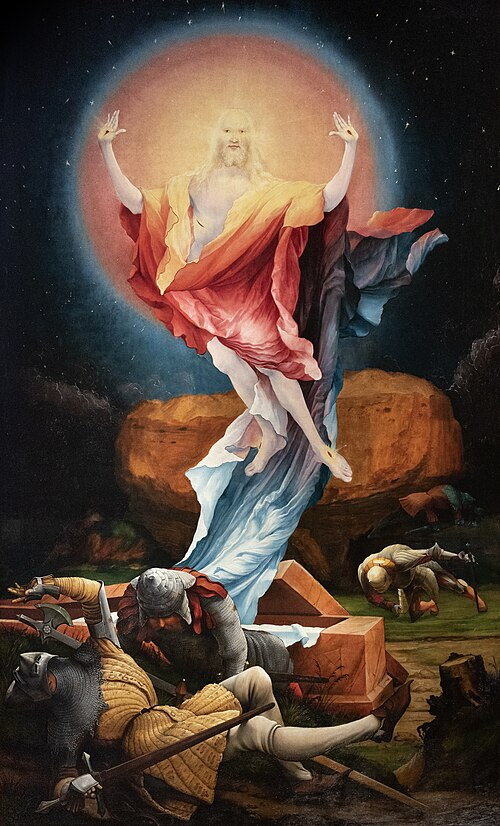
Auferstehung Christi
Die lichtreichen Geheimnisse
- Der von Johannes getauft worden ist
- Der Sich bei der Hochzeit in Kana offenbart hat
- Der uns das Reich Gottes verkündet hat
- Der auf dem Berg verklärt worden ist
- Der uns die Heilige Eucharistie geschenkt hat
Aufopferungsgebet nach dem Rosenkranz
Ewiger Vater, durch die unbefleckten Hände Mariens nimm an diesen Rosenkranz. Möge die Rosenkranzkönigin durch ihre Fürbitte ergänzen, was an meinem Gebet unvollkommen war. So werde es für Dich, gütiger Vater, eine würdige Sühne für meine Sünden und die Sünden der ganzen Welt. Amen.
Inständig bitte ich euch bei der Liebe, die ich in Jesus und Maria zu euch hege, betet täglich den Rosenkranz. Ihr werdet in eurer Todesstunde Tag und Augenblick segnen, da ihr mir geglaubt habt. Hl. Ludwig M. Grignion von Montfort
Liebt die Gottesmutter und sorgt dafür, dass sie geliebt wird. Betet immer den Rosenkranz. Hl. P. Pio